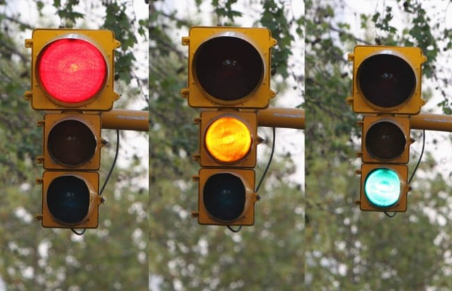

Instituto Tecnológico Superior de Pátzcuaro
Optimización de arribo al transporte público para las diferentes personas que lo frecuentan
Alumnos: Miguel Ángel Piedra González Juan Eduardo Calderón Servín Profesora: Soraida Quesada Ascencio
Introducción
En la actualidad, las aplicaciones móviles son muy utilizadas debido a que permiten a la persona que se encuentra usándola, llegar a resolver una necesidad, tarea o actividad en cada momento de su día a día.
Existen una gran cantidad de diferentes tipos de aplicaciones móviles que incluso se asemejan a las aplicaciones de un ordenador (PC).
Antecedentes
El control de tráfico vial implica la organización de la circulación vehicular y peatonal alrededor de una zona de obras viales o accidentes, asegurando la seguridad de los equipos operativos involucrados y del público.
Según Luis Fernando P., César Augusto H. y Danilo Alfonso L. en Bogotá:
“El transporte particular que se desplazó por la red vial de Bogotá para el año 2010 constó aproximadamente de 1, 063,869 automóviles particulares matriculados. Durante el 2010 en Bogotá transitaron 17,083 vehículos de transporte público y 49, 206 taxis. Estos vehículos realizaron el 56% de viajes en la ciudad y el restante 22% estuvo cubierto por desplazamientos a le, motocicletas y bicicletas, entre otros.”
Planteamiento del problema
Descripción del problema y planteamiento
El crecimiento desordenado de la población en distintas ciudades del planeta ha traído como consecuencia que las ciudades crezcan y por lo tanto también su infraestructura.

Entre los principales problemas que se generan en México debido a la situación actual de los semáforos los más preocupantes son los siguientes:
1. Los accidentes automovilísticos que representan una pérdida para la sociedad, ya que es una de las principales causas de mortalidad en México.
2. Los largos tiempos de espera para poder desplazarse en la ciudad.
3. Las altas cantidades de emisiones de CO2 al ambiente debido a la gran cantidad de autos que quedan atrapados en las congestiones.
¿Cuáles serían los efectos de implementar una web App mediante la cual se toman decisiones en el uso del transporte público en la ruta del libramiento de Pátzcuaro Michoacán?
Objetivos
Objetivo general
Desarrollar e implementar una webapp que describa los tiempos para tomar el transporte público de la ruta de A en el libramiento general de la ciudad de pátzcuaro, para que la gente se vea beneficiada en la optimización del tiempo y conozca el horario oportuno para tomar su servicio.
- Medir y evaluar el beneficio de la aplicación con las personas.
- Brindar información confiable de horarios de la ruta de transporte.
- Promover las aplicaciones Web en la solución de problemas cotidianos de la vida real.
Hipótesis
Cuanto mayor sea el uso de la web App para geo-localización de combis en Pátzcuaro, menor será el número de personas en espera por el transporte público.
Justificación
La realización de éste proyecto es realizado con el fin de presentar información confiable de los horarios de las combis para que las personas puedan tomar decisiones y beneficiarse en llegar a tiempo a sus negocios, trabajos, escuelas, entre otras.

Los principales beneficiados serán los usuarios foráneos, locales, extranjeros y usuarios concurrentes de esa ruta
Marco teórico
El marco teórico es parte fundamental de cualquier investigación, por ello, se define como la sustentación teórica del estudio o tema de investigación. Consiste en analizar y exponer las teorías, enfoques, investigaciones y antecedentes que se consideren válidos para el correcto encuadre del estudio. (Sampieri, 1991).
El estudio “Our Mobile Planet”, menciona que el número de smart phone aumentara para este año 2015 en comparación con otros años anteriores, y ha sido tal su impacto que han transformado el comportamiento de los consumidores.
Elección del tema para el desarrollo de la aplicación
Las app´s posibilitan aún más la comunicación dialógica al ser herramientas portables que la mayor parte de las veces están junto al usuario.
Presencia de web Apps en Pátzcuaro
Éste proyecto se refiere a una herramienta para los usuarios del transporte público que deseen conocer el horario de la ruta del libramiento de la ciudad para que puedan tener el control de sus actividades, sin la demora y pérdida de tiempo que lleva esperar un transporte público.
Esfuerzos de otras ciudades por tener una ciudad digital
En el mundo actual existen ciudades que han hecho grandes esfuerzos por llevar la tecnología al alcance de toda la ciudadanía sin importar sus condiciones sociales, sino más bien lo que se proponen es satisfacer una necesidad por medio de las web Apps.
Conceptos del transporte público
Molinero y Sánchez (1997:15) señalan que las principales características de los sistemas de transporte se basan en:
- Operación de transporte.
- Servicio de transporte.
El sistema de transporte público (STP)
La medida más usual para dar prioridad al transporte colectivo es el de asignar carril exclusivo, que consiste en separar uno de los dos carriles de una vía para que sea utilizado exclusivamente por el vehículo de transporte público.
Aspectos para la recopilación de la información
La evaluación dependerá de datos fácilmente obtenidos sin depender en mayor porcentaje de la información de los operadores; se necesitan entonces encuestas de campo para obtener la mayor parte de la información.
Se propone las siguientes variables de rendimiento clave en la operación:
- Número de pasajeros por unidad.
- Número de vehículos por hora.
- Kilómetros recorridos.
- Accidentes en el transporte público.
- Averias en servicio.
- Consumo de combustible.
- Kilómetros muertos.
Metodología
En la presente investigación se utilizarán los siguientes tipos de investigación:
- Investigación aplicada.
- Investigación de campo.
También se utilizó el pensamiento sintético que se basa en reducir la cantidad de información como de detalles y concentrarse solamente en una sola ruta (Ruta A del Lib. De Pátzcuaro), por lo tanto se utilizará el pensamiento deductivo.

- Uso de apps web y tecnología móvil.
- Estado de las tecnologías móviles.
- Algunas aplicaciones de las tecnologías móviles y las apps web.
- Estructuración de objetivos.
- Redacción de hipótesis.
- Evaluación de los costos de las combis por persona y servicio de Internet ya sea de paga o gratuito en determinados puntos locales.
- Medición del nivel de calidad del servicio público y la app web.
- Técnicas para la recolección de datos.
- Redacción de hipótesis.
| Factores de medición de calidad del servicio | Indicadores |
|---|---|
| Tiempo requerido para completar un recorrido completo | Tiempo de recorrido Tiempo de espera Tiempo para evadir interrupciones inesperadas |
| Comodidad | Disponibilidad de lugar para que el usuario se siente. Opinión de los usuarios sobre la comodidad. |
| Tiempo de acceso a la red de Internet | Disponibilidad de la red (2G, 3G, 4G o local (servicio gratuito de Internet en lugares públicos) Saturación de usuarios en la red |
| Tiempo de carga de la aplicación web | Contenido innecesario que se carga Saturación de acceso a la aplicación web |
| App web comprensible | Contenidos claros y simples |
Regresar a la lista
Técnicas para la recolección de datos.
- Elección del tema de investigación.
- Búsqueda de antecedentes del proyecto.
- Recopilación bibliográfica.
- Trabajo de campo.
- Recopilación de las encuestas y procesamiento de la información.
Técnicas para la recolección de datos.
- Recopilación de herramientas de software para el diseño y desarrollo de la web app.
- Modelo Navegacional.
- Pruebas.
- Implementación.
Operacionalización de variables
Cronograma
Bibliografía
http://www.skyscrapercity.com/showthread.php?t=1412942
altonivel. (s.f.). Recuperado el 17 de Marzo de 2015, de http://www.altonivel.com.mx/21096-como-usan-los-mexicanos-sus-smartphones.html
appdesingbook. (s.f.). Recuperado el 18 de Marzo de 2015, de http://www.appdesignbook.com/es/contenidos/las-aplicaciones/
El Desempeño Interactivo de las Aplicaciones Móviles (App's) implementadas por el Gobierno del Distrito Federal 2012-2014. (19 de Marzo de 2015). Mexico DF.
Lerbinger, Otto. Diseños para una comunicación persuasiva. Editorial el manual
moderno. México. 1979
Our Mobile Planet. (s.f.). Recuperado el 17 de Marzo de 2015, de www.kelevrads.com/sp/files/our_mobile_planet_mexico_es.pdf
Sampieri, h. (s.f.). slideshare. Recuperado el 17 de Marzo de 2015, de http://es.slideshare.net/pts/resumen-hernandez-sampieri
Blancornelas, Jesús. Horas Extra. México, DF.: Plaza Janes. 2003
Cook D., Thomas; Reichardt S., Charles. Qualitative and quantitative methods in
evaluation research. Sage Publications. Inglaterra. 1979
Graizbord, Boris. Un modelo analítico de participación ciudadana. Revista
Economía, Sociedad y Territorio. 2002
International Monetary Fund. Consumer Market Perspective. Market: Africa/Mid
East. Estados Unidos, 2005; p.5.
La iniciativa de comunicación: http://www.comminit.com/la/
Secretaría de Comunicaciones y Transportes de Puebla: http://www.sct.pue.gob.mx